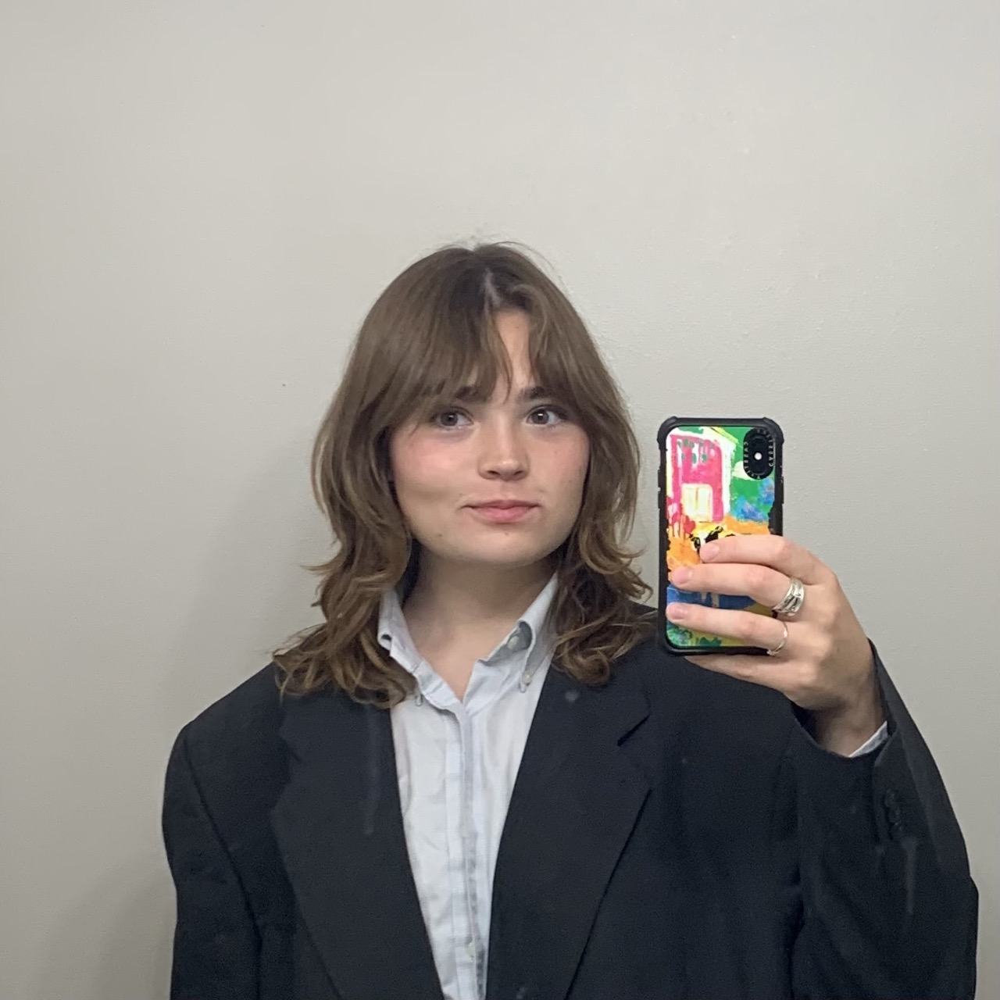

CONTACT ∙ Provo, UT
hopes1116@gmail.com
Instagram

EDUCATION
BFA: Emphasis in Studio Art and Painting (Dec 2027)
Brigham Young University, Provo, UT
Language Certificate in Portuguese
GPA 3.89
Recipient of the Will Ward–Visual Arts Scholarship
EXHIBITIONS
Student Show, The Weight Room Gallery, Provo, UT, 2024
Mayhew Show, Art & Design Office, Provo, UT, 2024
Homegrown Art Show, Provo Public Library, Provo, UT, 2023
Japan, The Weight Room Gallery, Provo, UT, 2024
Color of Memory, The Weight Room Gallery, Provo, UT, 2024
Water, The Weight Room Gallery, Provo, UT, 2024
Student Show, The Weight Room Gallery, Provo, UT, 2023
COMMISSIONS / FREELANCE WORK
Music Video Graphics, Charlie Alexander, Los Angeles, CA, 2024
Riso Calendar, Corner Riso, Provo, UT, 2024
RESIDENCIES / WORKSHOPS
Gallery Installation Workshop, Joe Ostraff, Washington DC, 2023
AWARDS & GRANTS
Talent Award 2023
Talent Award 2024
Mayhew Show Third place
ART / TECHNICAL SKILLS [below are examples: only list skills beyond a basic skillset]
Mediums: Oil, Gouache, Watercolor, Graphite, Photography
Technical Skills: Relief printing, Sewing, Bookbinding, Riso Printing
Digital Skills: Adobe Photoshop, Illustrator, Indesign
Studio Skills: Gallery installation, Curation
Kynlee Walker is a Provo, Utah based artist who works with vibrant,
monochromatic color in painting, prints, and sculptures. In her work,
she wrestles with inner thanksgiving and perspective. Her work has
been featured in various collaborative shows at Brigham Young University
and local group installations, including the Provo Public Library. Kynlee
has had the opportunity to study art around the world, including Japan,
Washington DC, and Brazil. She is the two time recipient of BYU Fine
Arts 2D Talent Scholarship, the Will Ward–Visual Arts Scholarship,
and third place winner of the Mayhew Show contest. Kynlee was born in
2003 in Memphis, Tennessee and is currently working towards a BFA from
Brigham Young University.